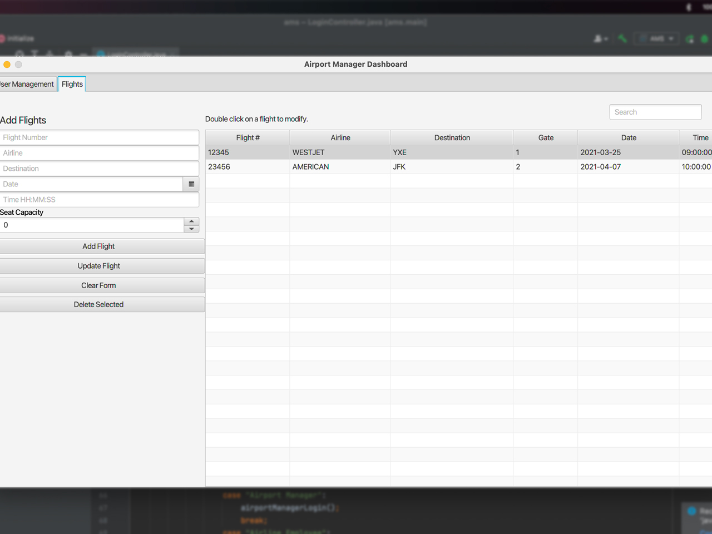
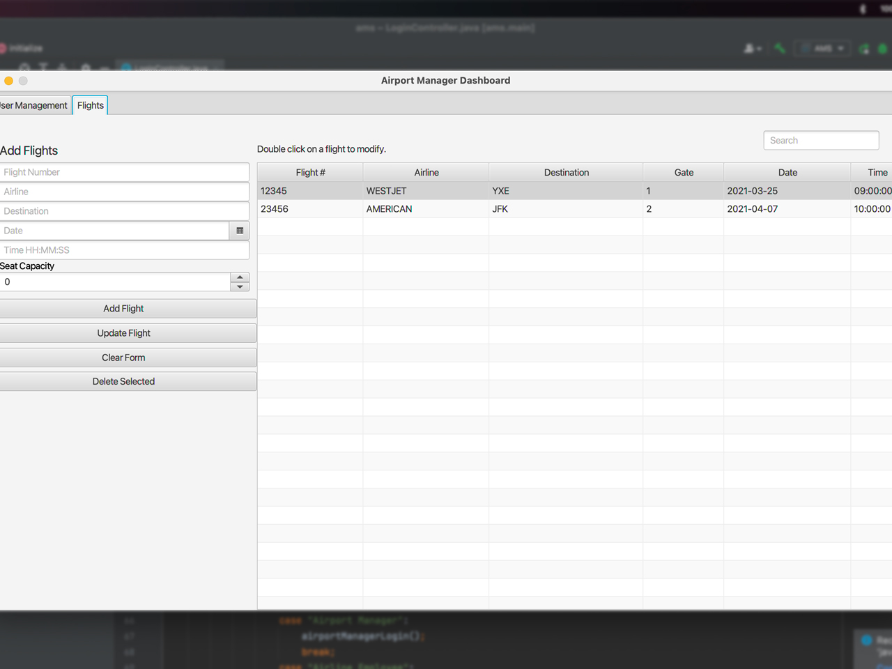

My name is Kelly Neuda. I am currently in my fourth year of Interactive Systems Design, which combines courses in art and art history, psychology, and computer science. It provides knowledge and skills in the principles of visual communication, human perception, memory and cognition, and the design and evaluation of interactive systems. My first degree in computer systems engineering refined my programming and problem-solving skills which greatly helped me in starting my second degree. My first two years in the University of Saskatchewan helped me retain such skills and exposed me to a new society and culture.
Airport Management System
 

A desktop application intended for an airport to use, in managing the day-to-day operations of its business such as managing gates for flights, managing employee schedules, and deployment throughout the airport.
Developed using Java, JavaFX using SceneBuilder, and SQL. Developed user personas, user interface storyboards, and test plans, implemented features such as modifying a flight, adding an employee role, etc., and produced documentation for milestone submissions.
Implemented and delivered with Scrum software development, with data model using database through SQL, and version control using Git.